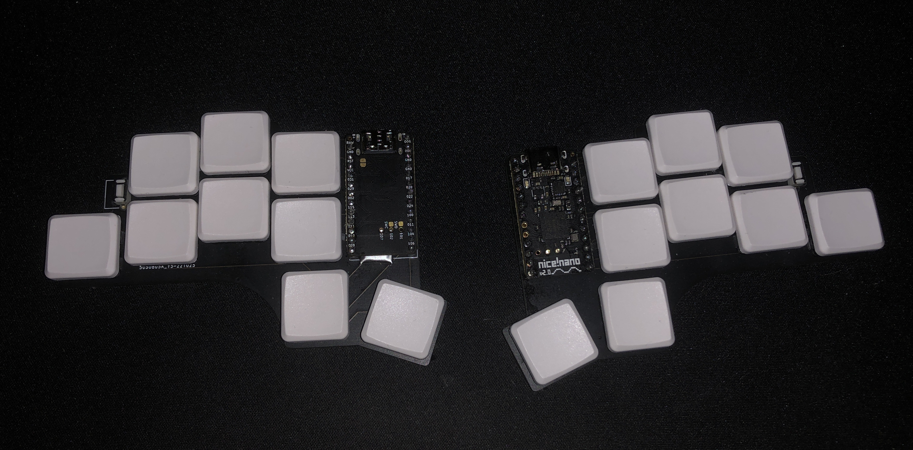

To build a keyboard
The problem with normal keyboards
Soon after I had learnt to touch type started feeling the consequences of typing quickly. I got pain in my wrists, by only typing very little because there are obviously people who type more than me and they're fine. I might just be more susceptible to wrist injuries than others or something but I felt I had to do something about it.
Custom keyboard formfactors
The first keyboard I built was a Corne-Cherry from a kit I bought online. It included Glorious panda switches I lubed up myself as well as two pro-micro controllers. While that keyboard was largely fine to type on, the switches were especially good compared to normal cherry reds. I still felt part of the same issues as on the qwerty keyboard. Note here is that I used the dvorak layout on both. The fact that it was a split keyboard definetly helped avoid the awkward angle you get on a normal keyboard and thumb keys are great for speed. But the main issue is for one that it is so high so you get a different bend, this could be solved with a simple wristrest but then I need to carry that around too. And in addition to that it still had too many keys on each finger which leads to strain on weak fingers like the pinky
The final form
After that partially failed venture I decided to go even smaller and built the tiny-18 which, descriptively, has 18 keys over 2 wireless halves. Built using a custom printed PCB from jlcpcb which I made in keycadand 2 nicenano controllers with one 100mAh battery each, that lasts me a couple of days per charge. The keys are also different, low profile khail choc v1 black keys this time. They're super nice to type on, maybe a bit on the heavy side, should have gotten the 45g switches instead but oh well. I lubed those too and did a tape mod, very time consuming but easy with so few keys and definetly worth it for the nice sound they have now.
The layout on this
Of course the dvorak layout did not fit on an 18 key keyboard so you have to get a bit creative. I did not come up with the alpha-layers myself but stole them from Ben Vallack which made a similar one with only 16 keys. He is also where the idea came from. The tiny-18 uses the ISRT layout modified to include all the most common keys on the top alpha layer, so not much.
You have to get creative with the keys so there are many functionalities on one keyMeaning: hold | tap
Meaning: &(goto Alpha 1) &AL1
Alpha 1
| &NUM | S | R | T | N | E | &BRC | A | ||
| CTRL | I | &WSP | L | G | D | H | U | &NAV | O | &SY1 | C |
| Super | Shift | BSPC | &AL2 | &MOD | Enter |
Alpha 2
The second escape here is redundant, could improve by putting something more useful there but then it does not match the first layer| J | P | K | B | . | X | ||
| CTRL | Q | V | W | M | F | , | Z | RALT | Y |
| Super | Esc | Shift | BSPC | &NUM | Del | Esc |
Symbol 1
| @ | ' | ^ | $ | - | = | ||
| ! | & | # | * | / | \ | % | |
| Super | Shift | Space | &Num | Del | RCTRL |
Bracket
| ; | [ | ( | ) | ] | |||
| { | : | ` | ~ | Tab | } | ||
| Super | Shift | BSPC | &AL2 | &MOD | Enter |
Modifier
Meaning: .Key => modifier key activates during next normal keycombinationThe arrow keys are placed like this to be used in vim instead of HJKL (I know what a sin, but you can't fit both HJKL and arrow keys on this thing)
| Home | .LALT | Del | Left | Down | Up | ||
| Ins | End | PG_Down | PG_Up | Tab | Right | ||
| Super | Shift | Space |
Number
Also a version of this (WSP) that is the same, but with the mod key always held down to quickly change workspaces| 2 | 3 | 7 | 8 | 9 | |||
| 1 | 4 | 5 | 6 | . | , | 0 | |
| Super | Shift | BSPC | &AL2 | &MOD | Enter |